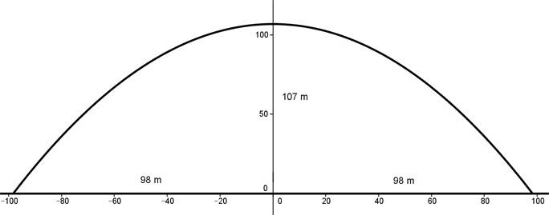

Aufgabe 138 Eine symmetrischer, parabelförmiger Brückenbogen hat eine Spannweite von 196 m und einen höchsten Punkt bei 107 m. Wie lautet seine Funktionsgleichung?  Ermittlung der Funktionsgleichung: Die Parabel ist symmetrisch zur y-Achse, deswegen ist es eine der Form y = ax2 + b. b ist der Schnittpunkt mit der y-Achse, hier b = 107. Eine Punktkoordinate abgelesen: P(98,0) Eingesetzt: 0 = a * 98² + 107 |-107 -107 = a * 9 604 |:9604 a = -0,011 y = - 0,011x2 + 107